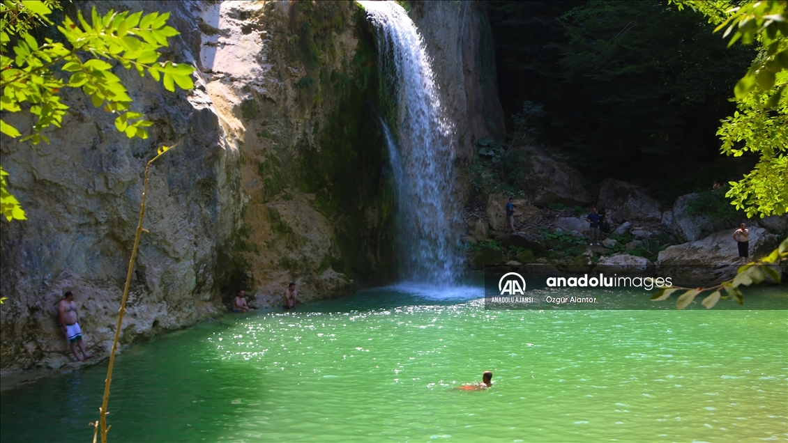
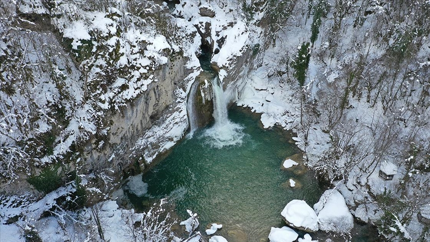
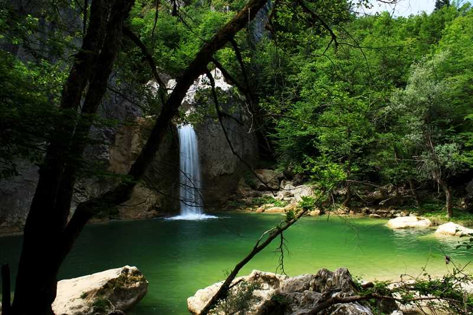
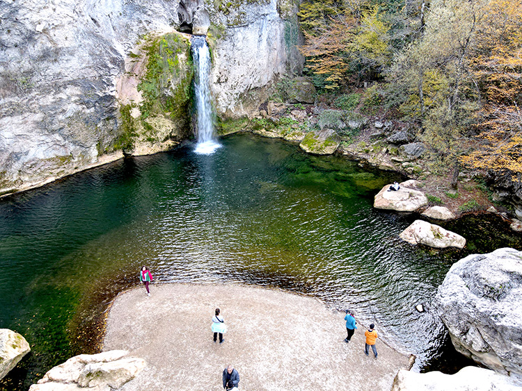
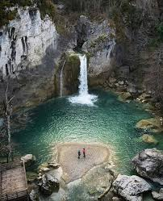

Yukleniyor...

Dogal havuz, kayalik vadiden gelen kaynak suyu ile beslenir.
Akan Su Sistemi Haritasi
Su Baglanti Rotasi
Kaynak noktasi -> yerel dere -> ana cay hatti -> bolgesel nehir sistemine baglanti.
45-90 sn Mikro Belgesel
Fotograf Galerisi




Coklu Dil Sesli Anlatim
Ana Anlatim
Detay Anlatim
Metin Alani (TR / EN)
Turkce Metin
English Text